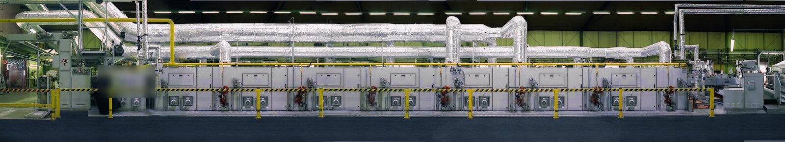
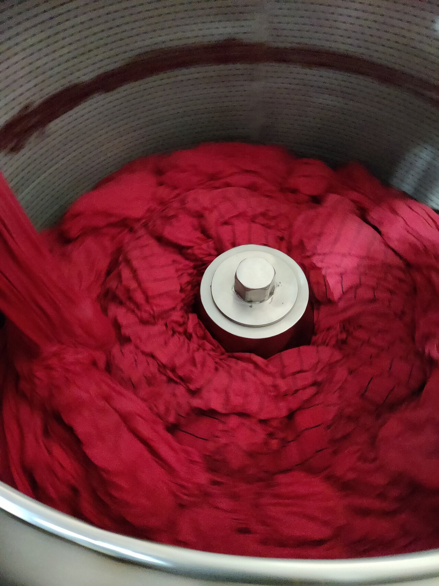
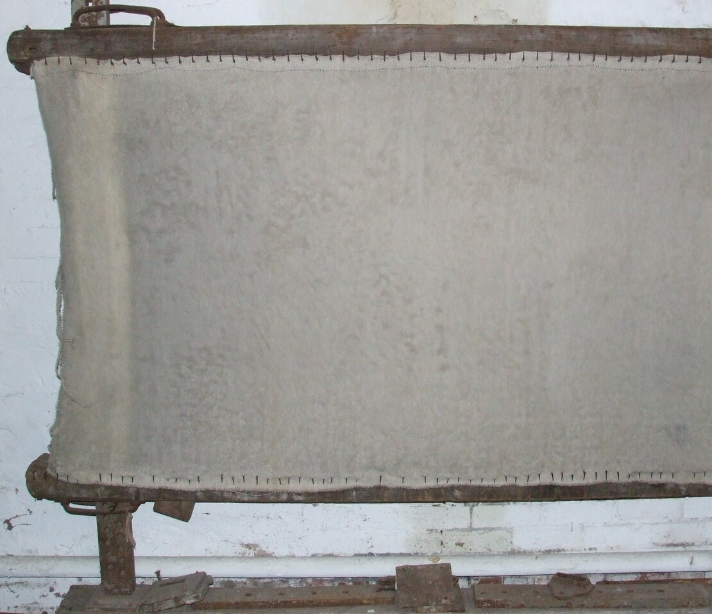
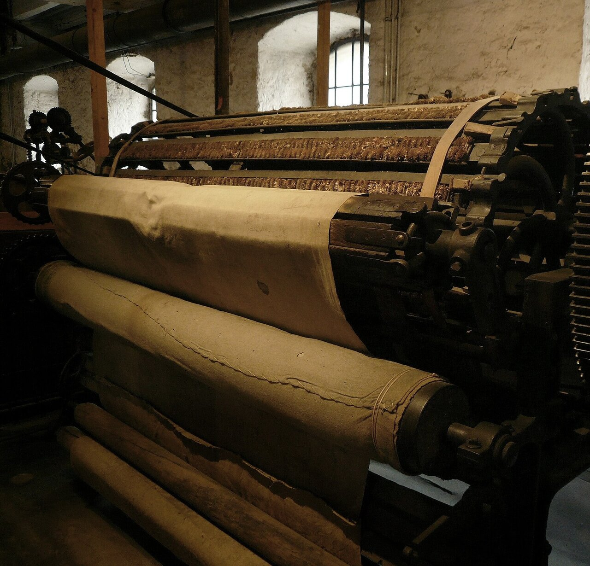
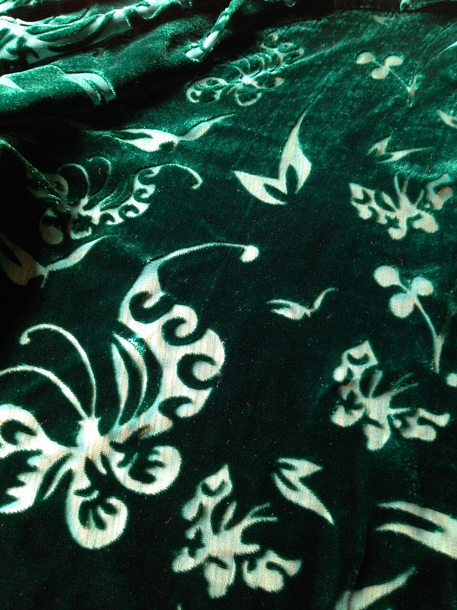
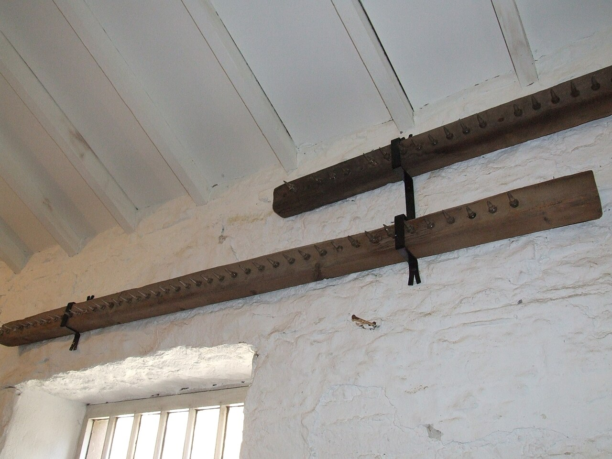
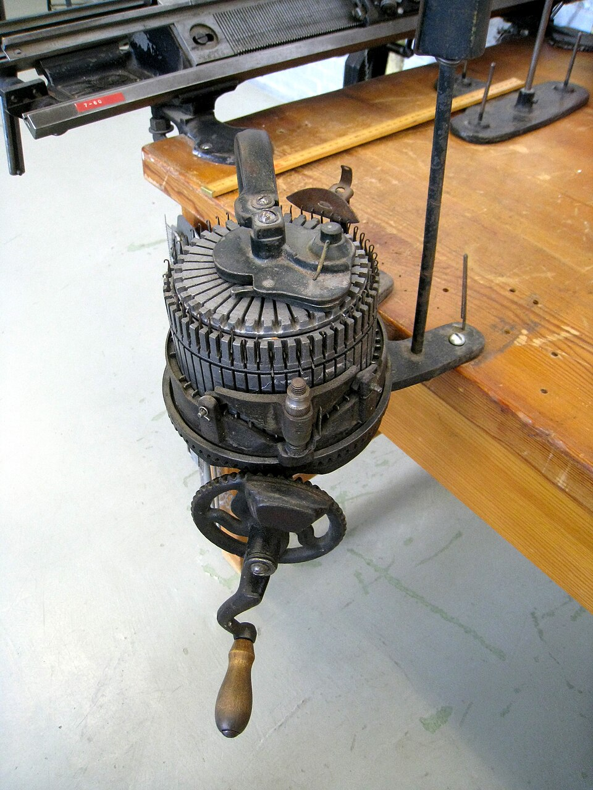
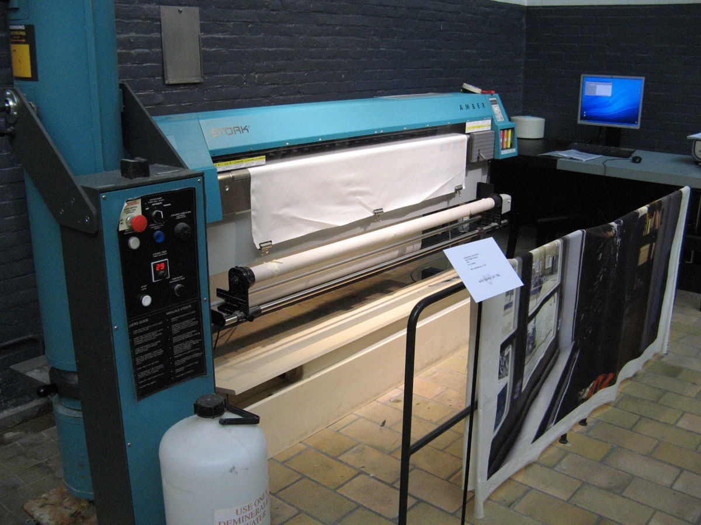
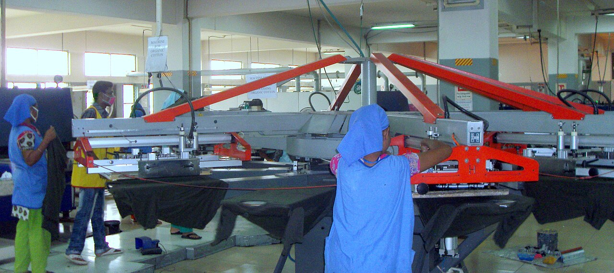

교육자료 · 후가공
염색 다음, 원단의 폭·손맛·수축을 잠그는 칸. 저지 티셔츠 본선은 약제 적시기 → 폭·열 잡기 → 수축 미리 잡기다.



염색이 색을 넣으면 후가공은 치수와 손맛을 잠근다. 약제는 패딩, 폭·열은 텐터, 세탁 수축은 컴팩터.
핀·클립이 변부를 잡고 열풍으로 건조·열고정. 현장에서 부르는 말. 저지 니트는 거의 핀 텐터.
펠트·고무벨트로 루프를 이완한다. 텐터(열)와 역할이 다르다. 스판 혼방은 텐터가 먼저다.
파일 텀블·기모 설비와 전모·해모·폴리싱은 파일·플리스 원단용이다. 저지 티셔츠 본선 공정이 아니다.
잔류수축 3–5%는 흔히 인용되는 상업 범위일 뿐, 공장 목표가 아니다. 이 페이지 숫자로 공장 규격을 정하지 않는다. 작지·바이어를 본다. ZDHC MRSL·OEKO-TEX는 바이어가 요구할 때의 계약 언어. 저욕비 1:5는 공개 소프트플로 예시. 현장 설비 액비는 작지·설비를 본다.
| 쉬운 말 | 지금 말 | 영어 | 하는 일 | 메모 |
|---|---|---|---|---|
| 약제 적시기 | 패딩 | pad | 약제 묻히기(pickup) | 유연·수지·기능제. 본선 첫 칸. |
| 폭·열 잡기 | 텐터 | stenter / tenter | 폭고정·열고정·큐어링 | 핀 텐터. 오버피드. |
| 수축 미리 잡기 | 컴팩터 | compactor | 남는 수축 이완 | 튜블러 / 오픈와이드. 펠트·고무벨트. |
| 일반 열고정 | 노말가공 | normal finish | 기능제 없는 기본 | 기능제 없는 텐터 코스. |
| 가벼운 머서 | 약실켓 | light mercerize | 라이트 머서라이즈 | 우븐 본실켓을 저지에 그대로 쓰지 않는다. |
| 선택 표면 | 캘린더 · 피칭 | calender / peach | 평활·짧은 잔털 | 필수는 아니다. 기모·전모와 구분. |
| 파일·플리스 전용 | 파일 텀블 · 기모 설비 | pile tumbling / raising | 텀블·기모·광택 | 파일·플리스. 티셔츠 본선이 아니다. |
실리콘 유연·수지·흡습·항필을 골고루 묻힌다. 본선 입구.
열×시간×장력이 한 세트. 현장에서 인용하는 범위(코튼-스판 저지 공개 예): 175–180°C, 체류 35–50초, 오버피드 15–25%. 공장 기준이 아니다. 작지·설비를 본다. 온도만 올리면 엘라스테인이 먼저 죽는다.
세탁이 할 일을 미리 한다. 길이 수축을 기계적으로 잠근다. 컴팩터만으로 스판덱스 열기억은 못 잡는다.
캘린더(평활)·피칭(짧은 잔털)·효소(셀룰라제)·친수 실리콘. 과하면 종이 촉감·구멍.
흡습속건·항필링·저포름 수지. 약실켓=가벼운 머서(라이트 머서라이즈). 노말가공=일반 열고정(기능제 없음).
로터리 안료 / 반응성 / 디지털 안료는 원단 단. DTG·DTF는 완성 티셔츠. 상세는 프린트 페이지.
후가공은 짜거나 엮은 원단에 물리적·화학적 처리를 해서 겉모습, 촉감, 성능을 좋게 하는 마지막 공정이다. 목적에 따라 크게 세 갈래로 나눈다.
원단 겉의 섬유를 긁어 일으킨다. 부드럽고 따뜻해진다. 예: 플리스, 기모 맨투맨.
뜨거운 롤러 사이로 눌러 지나게 한다. 겉이 매끈해지고 광택이 난다.
고운 사포나 모래로 겉을 살짝 긁는다. 복숭아 껍질처럼 보들보들해진다.
무늬를 새긴 롤러로 열과 압력을 주어 겉에 도톰한 무늬를 찍는다.
면을 진한 가성소다(수산화나트륨) 액에 처리한다. 실크 같은 광택이 나고 염료가 더 잘 먹는다.
짜고 염색하며 뻣뻣해진 원단에 유연제를 준다. 섬유끼리 마찰이 줄어 부드러워진다.

| 가공 | 하는 일 | 쓰는 곳 예 |
|---|---|---|
| 방수 (waterproof) | 물이 스며들지 않게 막는다. 주로 코팅·막을 입힌다. | 우비, 아웃도어 |
| 발수 (water repellent) | 겉에서 물방울이 굴러 떨어지게 한다. 숨은 쉰다. | 아웃도어, 재킷 |
| 방염 (flame retardant) | 불이 잘 안 붙고, 붙어도 스스로 꺼지게 한다. | 커튼, 소방복 |
| 항균 방취 (anti-microbial) | 세균이 덜 자라 냄새를 줄인다. | 양말, 속옷, 이불 |
| 방추 · 형태 안정 (anti-crease) | 수지로 구김을 덜 가게 한다. | 링클프리 셔츠 |
| 대전 방지 (anti-static) | 정전기를 줄여 먼지가 덜 붙는다. | 합섬 옷, 안감 |
| 자외선 차단 (UV protection) | 자외선을 흡수·반사하는 약품을 준다. | 래시가드, 여름 옷 |
| 흡습 (moisture absorbency) | 폴리·나일론이 땀을 잘 빨고 빨리 내보내게 한다. | 운동복, 이너 |
방축 가공(산포라이징, 컴팩터)은 약품이 아니라 기계로 미리 줄여 두는 가공이다. 위 가공을 넣는 자리의 컴팩터를 본다.
이미 만든 원단에 약품을 입혀 시원한 느낌을 준다. 실 자체를 바꾸는 것보다 쉽고 싸다. 대신 빨래를 거듭하면 효과가 점점 줄어든다. 그래서 캡슐에 싸거나 접착제(바인더)로 단단히 붙이는 방법을 쓴다.
| 구분 | 쓰는 것 | 원리 |
|---|---|---|
| 열을 빨아들이는 반응 | 자일리톨, 에리스리톨 | 땀에 녹을 때 주변 열을 빼앗는다. 땀이 나면 바로 시원하다. |
| 상태가 바뀌는 물질 (PCM) | 캡슐에 싼 파라핀 등 | 고체에서 액체로 바뀌며 열을 흡수한다. 냉감 패드·매트에도 쓴다. |
| 열을 빨리 옮기는 코팅 | 특수 수지, 광물 가루 | 피부가 닿는 순간 열이 원단으로 빨리 옮겨 가 차갑게 느낀다(접촉 냉감). |
| 두 가지를 함께 | 복합 가공제 | 추울 땐 열을 지키고, 땀이 나면 접촉 냉감과 증발 냉각을 같이 낸다. |
피부가 원단에 닿는 순간 열이 빠져나가는 최대 속도를 잰다. 값이 클수록 더 차갑게 느낀다. 기준값은 바이어 스펙을 본다.
섞어 짠 원단에 산 성분 풀을 찍어 한 섬유(주로 면·레이온)만 녹여 낸다. 녹은 자리가 비쳐 무늬가 된다.
겉에 폴리우레탄(PU)·아크릴 수지를 입힌다. 바람·물을 막거나 독특한 광택을 낸다.
일부러 구기며 빨아 자연스러운 잔주름과 부드러운 느낌을 낸다. 예: 워싱 린넨, 워싱 면.

가공을 마친 원단은 무게를 재서 스펙과 맞는지 본다. 보통 1 m × 1 m 넓이의 무게(g/m², GSM 또는 SQM)로 말한다.
원형 시료 칼: 원단을 판 위에 놓고 눌러 100 cm² 둥근 시료를 오려 낸 뒤 저울에 단다.
원형 칼은 100 cm² 넓이(1 m²의 1/100)를 오린다.
원 넓이 = π × 반지름².
100 ÷ 3.1416 ≈ 31.83 → 반지름 ≈ 5.64 cm → 지름 ≈ 11.28 cm.
그래서 저울 값에 100을 곱하면 g/m²다. 예: 1.75 g → 175 g/m².
전폭(인치) × g/m² × 0.02323 = 1야드 길이의 무게(g).
0.02323 = 0.0254 m(1인치) × 0.9144 m(1야드).
예: 전폭 67인치, 175 g/m² → 67 × 175 × 0.02323 ≈ 272 g/yd.
후가공으로 수축을 미리 잡았는지는 빨아 보고 잰다. 원리는 간단하다.
지워지지 않는 펜으로 길이(세로)와 폭(가로) 방향에 점을 찍는다. 정해진 방법으로 빨고 말린 뒤 다시 잰다.
(빤 뒤 길이 − 처음 길이) ÷ 처음 길이 × 100. 마이너스면 줄어든 것, 플러스면 늘어난 것이다. 예: 50 cm가 48 cm → −4%.
세탁 온도·횟수·건조 방법은 바이어가 정한 시험법을 따른다. 결과는 재단·패턴 여유를 정할 때 쓴다. 표시 간격도 시험법마다 다르다(예: 50 cm).
싱글 저지 티셔츠를 빨고 나면 옆선이 앞쪽으로 돌아가는 일이 있다. 이것을 비틀림(스파이럴리티, spirality)이라고 한다. 현장에서는 니트도 사행이라 부르기도 한다. 우븐 사행은 씨실이 휘거나 기운 것(bow·skew)이라 원인이 다르다.
사행(스파이럴리티): 빨래 뒤 옆선이 한쪽으로 비스듬히 돌아가고 밑단도 기우는 것. 환편 원단의 꼬임 때문에 생긴다.
실에 꼬임을 많이 줄수록 실이 풀리려는 힘이 남는다. 이 힘이 고리(루프)를 기울게 한다.
환편기는 실을 넣는 곳(급사구)이 많아 코스가 나선처럼 쌓인다. 실 꼬임 방향과 기계 회전 방향에 따라 더해지거나 줄어든다.
꼬임이 알맞은 실이나 합사 사용, 편직 조건 조정, 텐터에서 결을 바로 잡고 고정한다. 리브·인터록은 거의 안 생긴다. 조건은 작지·편직 칸과 함께 본다.
비틀림은 빨래 뒤에 커지는 경우가 많다. 그래서 수축 시험 때 옆선 비틀림도 함께 본다. 옆선이 돌아간 정도는 % 또는 각도로 잰다.
자주 보는 시험법 이름(참고용): 수축은 ISO 6330·ISO 5077, AATCC 135. 비틀림은 AATCC 179, ISO 16322. 방법·합격선은 바이어 스펙을 본다.
참고: 가정 세탁 치수 변화 시험법 요약 · 니트 비틀림 줄이기 기술 자료 · 니트 원단 결점 강의
| 옛 말 | 지금(쉬운 말) | 영어 | 근거 |
|---|---|---|---|
| 노말가공 애매 | 노말가공 = 일반 열고정 | normal finish | 기능제 없는 텐터 코스 |
| 약실켓 = 본실켓 | 약실켓 = 가벼운 머서 | light mercerize | 저지용 저농도·단시간 |
| 파일 텀블을 본선으로 봄 | 파일 원단 전용 | pile tumbling | 저지 본선이 아니다 |
| 전모·해모·폴리싱 기본 | 파일·플리스 전용 | shear / brush / polish | 벨로어·기모 |
| 날염을 한데 묶음 | 원단 프린트 vs 의류 프린트 | rotary / digital / DTG | 설비가 다르다 |
| 잔류 3–5% = 공장값 | 업계 인용, 바이어 스펙 | residual shrinkage | 공장 스펙이 아니다. 바이어 |
| ZDHC를 기본 숙제 | 바이어 요구 시 MRSL | ZDHC / OEKO-TEX | 기본 숙제로 쓰지 않는다 |
| 저욕비 1:5 = 공장값 | 공개 예시일 뿐 | low liquor ratio | 액비는 작지·설비 |

캘린더: 원단을 뜨겁고 무거운 롤러 사이로 눌러 지나가게 해 표면을 평평하고 매끈하게 만든다. 롤러를 여러 개 지그재그로 거치기도 한다.

바디사이즈 티셔츠: 몸판 폭에 맞춘 통 원단으로 짜서 옆솔기 없이 만든다. 재단 전 폭·수축이 여기서 결정된다.
머서라이즈: 면을 진한 가성소다에 잠깐 담갔다 씻으면 섬유가 둥글게 부풀어 광택과 염색성이 좋아진다. 저지에 쓰는 가벼운 머서도 같은 원리다.


교육용 영상은 이 페이지에 아직 없다.
이 페이지 숫자로 공장 규격을 정하지 않는다. 작지·바이어 스펙을 본다.
텐터다. 핀이 변부를 잡고 열풍으로 폭·열을 고정한다.
텐터는 열·폭, 컴팩터는 기계적 이완. 캘린더는 표면을 매끈하게 한다.
파일·플리스 특수 설비. 저지 본선은 패딩→텐터→컴팩터.
노말가공은 기능제 없는 일반 열고정. 약실켓은 저지용 라이트 머서라이즈.
3–5%는 흔히 인용. 1:5는 공개 예시. ZDHC MRSL은 바이어 요구 시. 공장 스펙·액비가 아니다.
발수 = 물방울을 튕긴다. 방수 = 물이 스며들지 못하게 막는다. 방염 = 불.
원형 칼은 1 m²의 1/100(100 cm²)을 오린다. 100을 곱한다.
겉에 입힌 약품이라 빨수록 빠진다. 캡슐·바인더로 보완한다.
(48 − 50) ÷ 50 × 100 = −4%. 마이너스는 줄어듦.
실의 꼬임 힘과 환편기 급사구 수가 주된 원인이다. 리브·인터록은 거의 없다.
.jpg){kind=link}